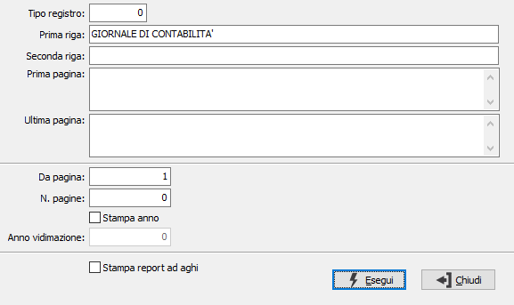

Numerazione registri bollati
Il programma provvede alla numerazione dei vari registri bollati da vidimare. Accedendo al programma, appare la seguente maschera video:

TIPO REGISTRO: valore numerico che definisce il tipo di registro da numerare. Valori ammessi: 0 per il giornale di contabilità, 1 per il registro Iva vendite, 3 per il registro Iva corrispettivi, 4 per il registro Iva acquisti, ecc. Procedendo per la prima volta ad intestare un registro (intestazione, descrizione della prima pagina e descrizione dell’ultima pagina) il programma memorizza tali dati per proporli automaticamente ogni volta successiva che si numera il registro individuato da questo numero. Sul campo è attivo il tasto F9 per lo zoom.
PRIMA RIGA: descrivere il testo (normalmente la ragione sociale e il codice fiscale o partita Iva) che si desidera stampare nell’angolo superiore destro di ciascuna pagina.
SECONDA RIGA: descrivere il testo (normalmente il tipo di registro) che si desidera stampare al centro della prima riga di ciascuna pagina.
PRIMA PAGINA: campo note per inserire la descrizione che verrà stampata al centro della prima pagina numerata. Generalmente viene ripetuta la denominazione del registro, la ragione sociale completa dell’azienda, il numero di codice fiscale (per il giornale) o il numero di partita Iva (per i registri Iva). Per andare a capo nei campi note, occorre usare i tasti CTRL+INVIO.
ULTIMA PAGINA: campo note per inserire la descrizione che verrà stampata al centro dell’ultima pagina numerata. Generalmente viene descritta la dicitura “Questo registro si compone di n pagine numerate da x a y … “ ecc. Per andare a capo nei campi note, occorre usare i tasti CTRL+INVIO.
DA PAGINA: indicare il numero di pagina dal quale deve iniziare la numerazione del registro.
A PAGINA: indicare il numero di pagina al quale deve terminare la numerazione del registro.
STAMPA ANNO: check box che governa la stampa dell’anno di vidimazione su ciascuna pagina secondo le vigenti disposizioni. Valori possibili:
vuoto = non stampa l'anno di vidimazione;
spunta = stampa l'anno di vidimazione.
ANNO DI VIDIMAZIONE: indicare l'anno di vidimazione del registro bollato, nel caso in cui il campo precedente abbia la spunta. Viene stampato su ogni pagina, prima del numero pagina.
STAMPA REPORT AD AGHI: consente di effettuare la stampa su moduli continui di stampanti ad aghi (casella con segno di spunta).
La successiva pressione del bottone Esegui avvia la stampa.